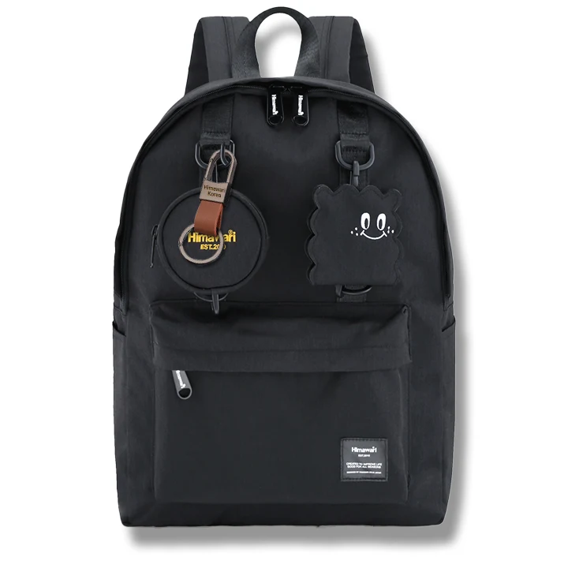

영수증이 열쇠에 따라 나오는 백팩, 작은 종이의 자리

열쇠를 꺼냈는데 영수증 한 장이 같이 따라 나오면 포켓 안에 무엇이 남았는지 다시 살펴보게 됩니다. 지갑 옆에 밀어 넣은 번호표가 아래로 내려가 여러 칸을 여는 경우도 있습니다. 작은 종이는 얇아서 눈앞의 빈틈에 넣기 쉽지만, 자주 쓰는 물건과 같은 길로 움직이면 찾는 행동이 달라집니다. 백팩에서는 종이를 보관할 목적에 더해 어떻게 들어오고 나갈지 정할 수 있습니다.
밖에서 받는 작은 종이는 크기와 사용할 시점이 제각각입니다. 당일 다시 보여줄 번호표도 있고 집에서 확인할 영수증도 있습니다. 필요한 원본을 어떻게 보관할지는 해당 용도에 따라 판단하고, 가방에서는 한 장씩 흩어 넣지 않을 묶음을 마련합니다. 얇은 봉투나 케이스를 쓴다면 실제로 받을 만한 종이를 넣고 자연스럽게 닫히는 외형으로 비교합니다.
열쇠를 꺼내는 길과 종이가 들어오는 길
열쇠가 있는 포켓은 하루에 여러 번 열 수 있습니다. 그곳에 종이를 추가한 뒤 열쇠를 꺼내보면 어떤 면이 같이 움직이는지 알 수 있습니다. 열쇠 고리에 종이가 걸리는지, 작은 케이스가 종이를 밀어 올리는지 관찰합니다. 종이가 떨어지지 않도록 손으로 계속 잡아야 한다면 두 물건의 위치를 나눌 수 있습니다. 항상 쓸 열쇠와 그날만 들어온 종이에 같은 자리를 주지 않아도 됩니다.
작은 종이를 따로 모을 봉투가 있다면 백팩에서 봉투 전체를 꺼낼 수 있는지 봅니다. 포켓 깊이가 깊어 봉투 윗면이 가려지면 다른 물건을 먼저 들어야 할 수 있습니다. 종이를 더 넣어 봉투를 높게 세우기보다 실제로 잡을 가장자리가 남는 위치를 고릅니다. 포켓 안에 넣는 방향을 바꾸거나 더 넓은 곳에 둘 수도 있습니다. 봉투의 크기와 손이 들어갈 여유를 같이 생각합니다.
얕은 위치에 둘 때에는 봉투가 여밈 밖으로 나오지 않는지 살펴봅니다. 가방 지퍼를 닫는 동안 종이 끝이나 봉투의 덮개가 지나가는 선에 들어오는지도 봅니다. 번호표를 빨리 꺼내려고 열린 채 꽂아두기보다 닫힌 위치에서 고를 수 있는 구성을 정해봅니다. 사용 뒤 같은 곳으로 돌아갈 수 있어야 다음에 열쇠나 지갑을 꺼낼 때도 서로의 길이 겹치지 않습니다.
지갑과 종이 봉투를 함께 넣는다면 어느 물건을 먼저 쓸지 확인합니다. 결제를 마친 뒤 영수증을 받을 때 지갑을 먼저 넣고 봉투를 꺼내야 하는지, 봉투를 가까이 둔 채 정리할 수 있는지 해봅니다. 계산대에서 가방을 넓게 펼칠 필요가 없도록 실제로 다룰 묶음을 줄일 수 있습니다. 모은 종이는 집에서 볼 수 있고, 현장에서는 받은 것을 닫힌 묶음으로 돌리는 준비만 해도 됩니다.
Himawari No.0422 블랙은 작은 종이와 일상 소지품을 함께 준비할 백팩의 예로 살펴볼 수 있습니다. 실제 사용하는 포켓을 열고 지갑과 열쇠, 종이 봉투를 각각 꺼내봅니다. 이 물건들이 어떤 순서로 움직이는지 보면 현재 배치에서 바꿀 부분이 드러납니다. 포켓의 구체적인 정보가 필요하면 봉투의 크기와 넣을 물건을 함께 설명해 확인할 수 있습니다.

종이 봉투 안에서도 당일 쓸 것과 나중에 꺼낼 것을 구별할 수 있습니다. 구분 면이나 앞뒤 위치를 쓰는 방법 가운데 손에 들었을 때 읽기 쉬운 쪽을 고릅니다. 백팩의 모든 작은 칸을 종이 분류용으로 늘릴 필요는 없습니다. 봉투 하나를 꺼내 필요한 종이를 고를 수 있다면 가방 안에서는 그 봉투의 자리만 유지하면 됩니다. 내용이 달라진 날에도 포켓 전체를 다시 만들지 않아도 됩니다.
봉투를 큰 칸의 파일 옆에 둘 경우에는 큰 자료를 꺼낼 때 함께 움직이는지 확인합니다. 파일 표지 안에 임시로 끼워 두면 종이의 묶음이 파일과 합쳐질 수 있습니다. 봉투를 잡을 면이 따로 남는지 보고, 큰 문서와 작은 종이를 각자 꺼낼 수 있는 구성을 선택합니다. 종이끼리 모였다는 사실보다 그날 사용할 범위를 고를 수 있는지가 중요합니다.
봉투 하나를 비우면 포켓도 다시 보인다
귀가 후에는 종이 봉투를 통째로 백팩에서 꺼내 정리할 자리에 둡니다. 포켓 안에 둔 채 몇 장만 빼면 처리한 것과 아직 볼 것이 섞일 수 있습니다. 봉투가 나온 빈 포켓의 바닥과 모서리에 낱장이 남았는지 살펴봅니다. 작은 종이가 계속 남는 자리라면 다음 준비에서는 그곳에 어떤 물건을 같이 넣었는지 참고할 수 있습니다.
정리할 시간이 바로 나지 않으면 봉투의 내용물을 집의 정한 자리에서 확인하도록 둘 수 있습니다. 다음 외출에 필요한 종이는 그 일정의 묶음으로 다시 준비합니다. 가방 안에 넣어두었다는 이유로 모든 종이를 계속 운반할 필요는 없습니다. 백팩에는 비운 봉투나 실제로 필요한 묶음을 남기고, 집에서 볼 자료는 위치가 보이도록 나누면 됩니다.
봉투가 두꺼워졌다면 더 큰 것을 고르기 전에 아직 꺼내지 않은 종이가 무엇인지 봅니다. 오늘 다시 쓸 종이가 많아진 것인지, 지난 외출의 자료가 계속 남은 것인지에 따라 필요한 배치가 다릅니다. 실제로 가져갈 두께를 정한 뒤 포켓의 여밈과 잡을 면을 다시 확인합니다. 얇은 봉투가 들어갔던 위치와 채워진 봉투를 다루는 위치가 다를 수 있습니다.
외출 중 종이를 대신 챙겨줄 사람이 있다면 어느 봉투의 것인지 알아볼 수 있게 구별합니다. 다른 사람의 종이를 개인 영수증 사이에 흩어 넣지 않으면 돌려줄 때 봉투 묶음을 그대로 꺼낼 수 있습니다. 가방을 가족과 함께 쓰는 경우에도 그날 들어온 종이를 다음 사용자에게 남기지 않도록 비울 시점을 정할 수 있습니다. 작은 포켓은 가방을 넘기기 전에 다시 볼 자리입니다.
가방을 바꾸는 날에는 봉투가 어느 쪽에 남았는지 실제로 확인합니다. 새 백팩의 지갑 자리와 열쇠 자리가 달라지면 종이 묶음도 다시 놓아봅니다. 이전 포켓의 이름을 복사하기보다 물건을 꺼내고 넣는 순서를 이어보면 됩니다. 종이 봉투를 옮기면서 집에 남길 자료를 정리할 수도 있습니다. 다음 외출에서 사용할 종이가 무엇인지 읽히는 구성으로 준비합니다.
같은 포켓에서 종이가 자주 따라 나온다면 정리 습관 전체를 바꾸기보다 열쇠와 봉투의 위치 한 쌍을 조정해봅니다. 지갑을 꺼내고, 번호표를 고르고, 받은 영수증을 닫힌 봉투에 넣는 동작을 각각 해볼 수 있습니다. 작은 종이가 들어갈 길과 집에서 나갈 길이 이어지면 백팩의 한 포켓을 오래된 종이 더미로 남겨둘 이유가 줄어듭니다.